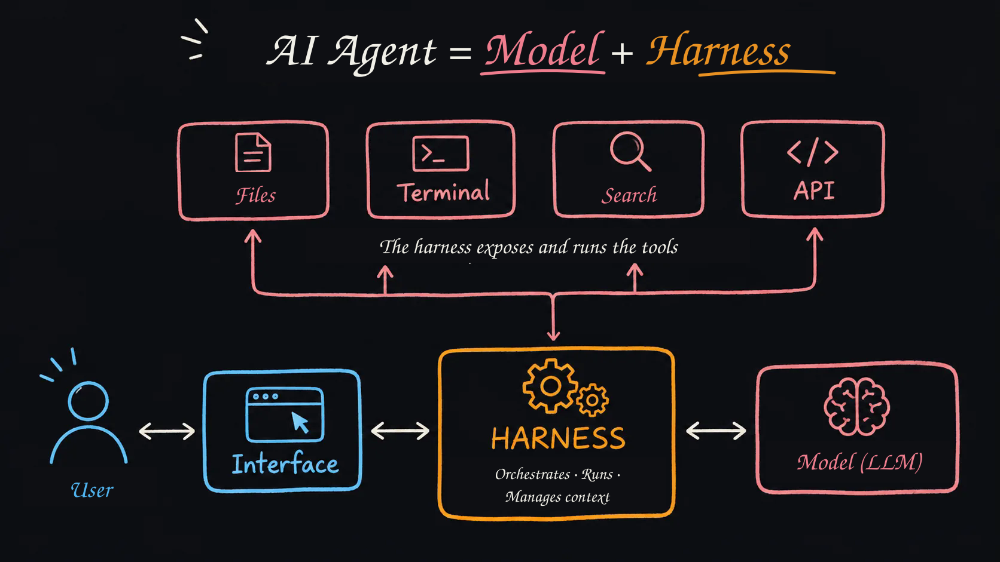
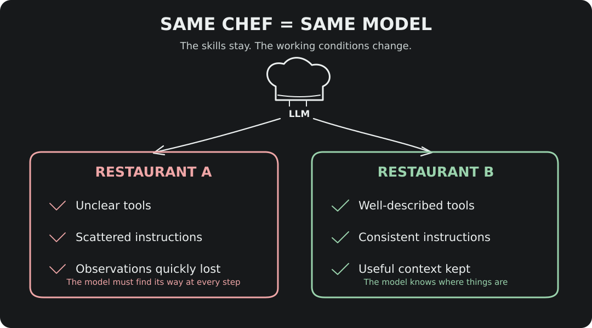
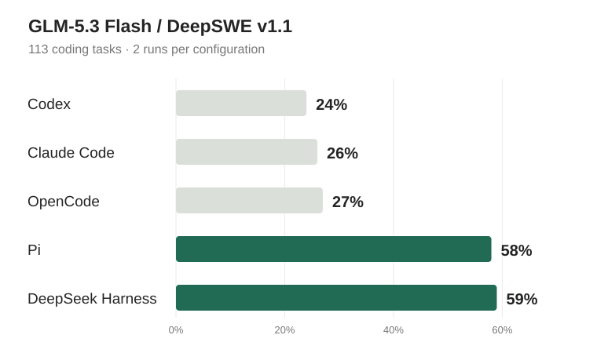
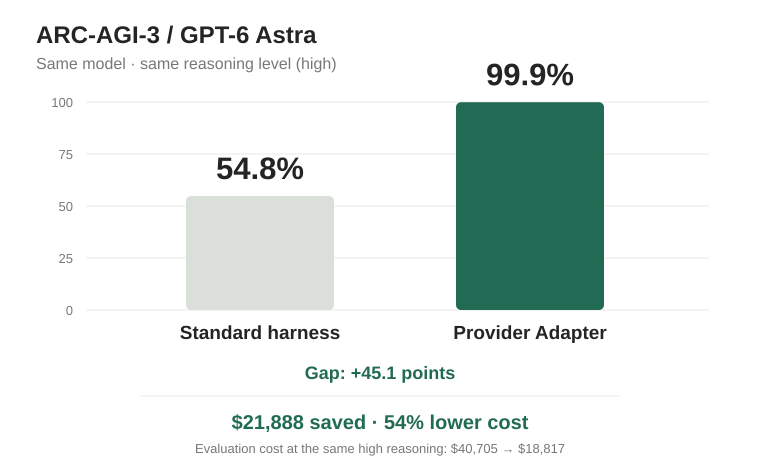
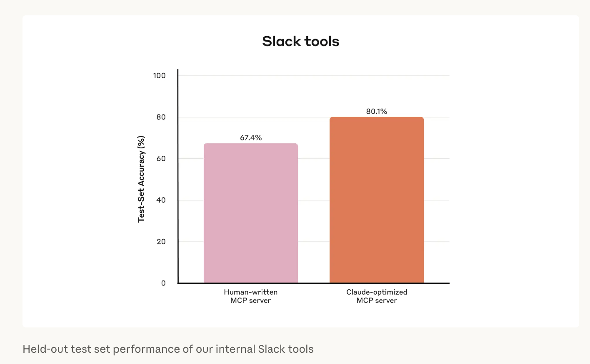
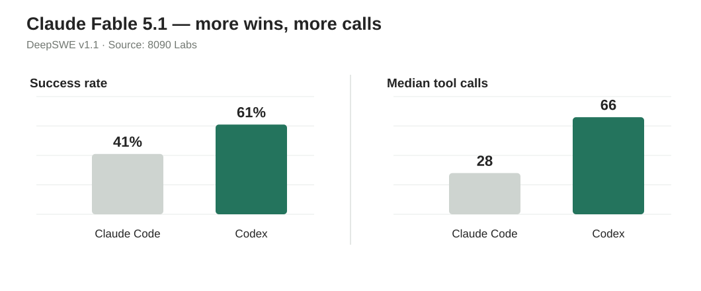
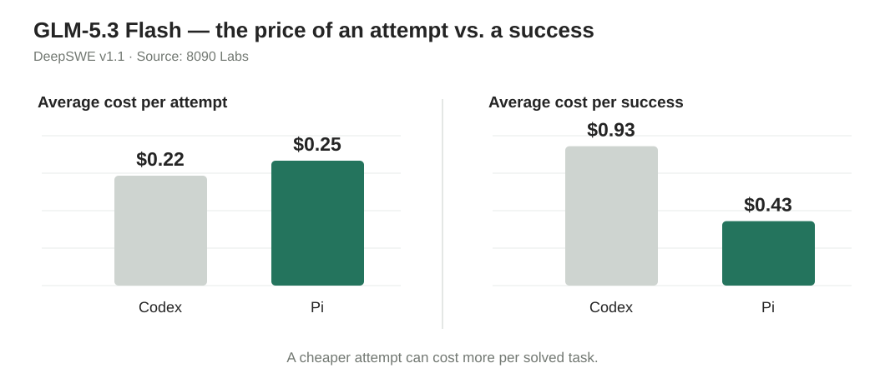
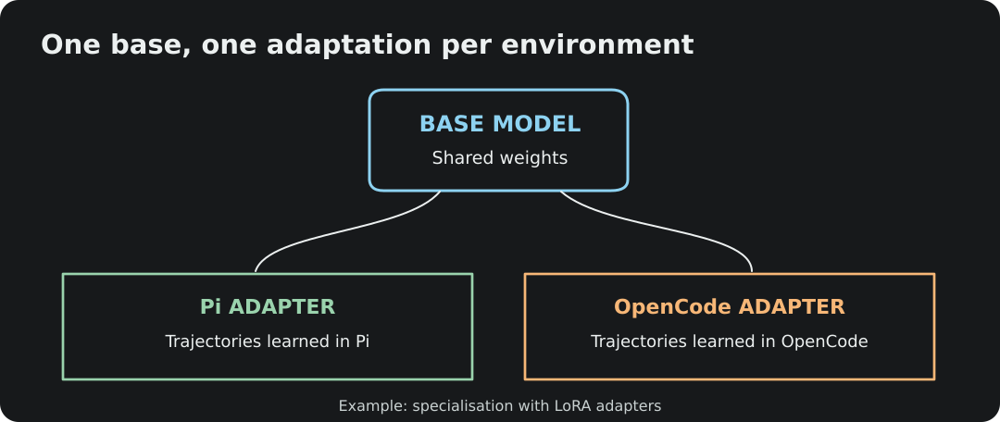
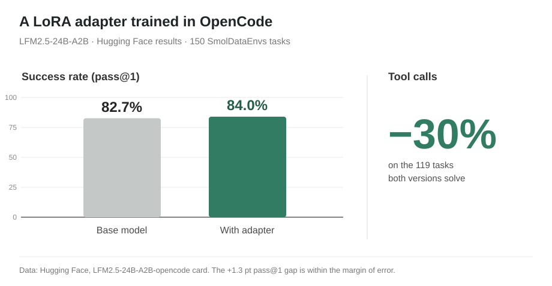

- A harness is everything around the model: what it sees, which tools it can use, and the loop that runs its actions.
- Swapping the harness without touching the model's weights can more than double a score. That's not noise. It's measured.
- A model leaderboard that doesn't name the harness is ranking pairs, not models.
A few weeks ago, one number made me reread every model leaderboard differently.
GLM-5.3 Flash solves 24% of coding tasks in Codex. The same model, on the same 113 tasks, solves 59% in DeepSeek Harness.
Same weights. Same tasks. A 35-point gap.
If the model didn't change, something else did. This note is about what that something is, why the effect is so large, and what it changes when you pick or build an agent.
We compare brains. We forget to look at the hands.
01What is a harness?
Let's start with something that's easy to forget: an LLM doesn't do anything. It produces text. That's it.
When you ask an agent how to start a project, the model doesn't open any file. It writes something like:
read_file(path="README.md")
That's a request. Someone has to read it, check it's allowed, actually fetch the file from disk, and hand the content back to the model. That someone is the harness.
The model reads the result, asks for the next action (open the docs, run the build), and the loop goes again until the task is done, or until a rule says stop.

So, a simple definition:
The harness is all the software around the model: what it sees, what it can do, and how its actions get executed.
In practice, a harness decides six things:
A picture helps. Take a great chef and move them to another restaurant. They keep their talent. But the kitchen isn't the same: the knives aren't where they used to be, the order tickets are badly written, nobody tells them where table 4 is at. They'll cook worse, without having become a worse cook.
The chef is the model. The kitchen is the harness.

- Model weights
- The billions of numbers learned during training. They are the model's "knowledge". In everything below, they don't change.
- A tool call
- A message from the model asking for an action (read a file, search the web) instead of answering directly.
- The context window
- Everything the model can "see" at a given moment. It's limited: on a long task, it fills up.
02The gaps are real, and measured.
In October 2026, 8090 Labs ran the clean experiment: seven models, five harnesses, the same 113 software engineering tasks. Here is GLM-5.3 Flash.

Look at the shape, not just the gap. It isn't a gentle slope. There are two groups: three harnesses around 25%, two around 58%. The model doesn't get a little better. It becomes a different agent.
But the effect depends on the model. In the same study, GPT-5.6 Sol moves only six points from one harness to another. So the harness isn't a fixed bonus you add to any model: it's an interaction. Some models are very sensitive to it, others barely.
Method 7 models × 5 harnesses, 113 tasks, 2 runs per pair. Two runs is not much: don't read anything into 24 vs 27. Thirty-five points, on the other hand, aren't luck.
A second example, on very different ground. ARC Prize evaluated GPT-6 Astra on ARC-AGI-3, interactive reasoning games, with the same reasoning level (high) in both cases.

Almost double. And, a detail that matters, the evaluation got cheaper: $18,817 instead of $40,705, 54% less. Better and cheaper at once, with the same model.
03Why does it vary this much?
Three levers explain most of it. Each one comes with a number.
ATools: what the model can do
Not every harness offers the same tools. Pi starts from four primitives (read, write, edit, bash) and lets the developer extend them. Claude Code, Codex and OpenCode each have their own interfaces and habits.
And how a tool is described matters as much as the tool itself. Compare:
get_data() get_tuition_fees(program_id, campus)
The first says almost nothing. The second says what, and with what. The model rereads every tool's name, description and parameters at every decision.
A tool description is a prompt. You write it once; the model reads it a thousand times.

BContext: what the model knows
At every step, the harness chooses what to show the model: instructions, files, tool outputs, history. On a long task, all of it ends up overflowing the context window. So you summarise: that's compaction.
Done well, it keeps what matters. Done badly, it erases the exact observation that explained a decision. The model then redoes work it already did, or loses the thread of its own logic.
An agent that forgets why it did something will do it again.
That's exactly what Astra's Provider Adapter does: it keeps the reasoning state between actions and compresses the context when it gets too long. OpenAI saw the same thing with GPT-5.6 Sol: these two settings take the score from 13.3% to 38.3% on the public ARC-AGI-3 set, with six times fewer output tokens.
CThe loop: how the model acts
Finally, the harness decides what to do after an error, how many steps to allow, when to run a check, when to ask a human. A loop that lets the model go back on its mistakes raises its chances. It also raises the number of actions.

Twenty more points, but more than twice the actions. Nothing is free.
And the two GLM groups? Honestly, the study doesn't say why Pi and DeepSeek Harness double its score. My intuition, offered as such: a small, fast model benefits from a simple environment with a few well-defined tools. Fewer choices, fewer ways to get lost.
04Why it matters: the price of a success.
Back to GLM-5.3 Flash, and a simple calculation. An attempt costs $0.22 in Codex and $0.25 in Pi. Codex looks cheaper. But you don't pay for attempts. You pay for finished tasks.

The cheapest attempt buys the most expensive success.
In production, one number is never enough. You need four, read together:
- Success rate, on your tasks, not a benchmark's.
- Number of tool calls, which tells you how much the agent fumbles.
- Latency, because a user won't wait three minutes.
- Cost per solved task, not per attempt.
And a broader consequence: when you read "model X beats model Y", ask in which harness. Without that, you're comparing pairs while believing you're comparing models.
05Fit the model to the harness, or the other way round?
Everything above keeps the weights fixed and changes the environment. That's the first lever, and often the cheapest: rework the tools, the context, the checks, then measure.
The other direction is to train the model inside a given harness, so it learns its formats, its tools and its sequences of actions.
That's what the Harness Adapters released on Hugging Face in November 2026 explore: one base model, and one small adapter per harness, trained with reinforcement learning on tasks whose result can be checked.


Let's be honest: the gain in success isn't proven. What's interesting is elsewhere. On the 119 tasks both versions solve, the adapter makes 30% fewer tool calls. In Pi, another adapter of the same base model goes down 39%, with a change in success (−4.2 points) that is also within the margin of error.
The model doesn't learn to succeed more. It learns to fumble less.
The Co-Harness work goes further: it evolves both at once. Analyse the failures, change the harness, generate new trajectories, adapt the model, repeat. The model and its environment stop being two separate projects and become one system you optimise.
- LoRA
- A way to adapt a model by training only a small added layer instead of all its weights. Light, fast, swappable.
- Reinforcement learning
- The model tries, we check whether the task succeeded, and we reinforce what worked.
06What we can take from this.
We already know how to route a request to a provider or to a model. The next logical step is routing to a pair, model and harness, based on quality, cost or latency. Tools like T3 Code already give access to several harnesses from one interface, and HarnessRouter announces this kind of routing. It still has to be measured on your own tasks.
If you're building an agent for production, here's what I'd check, in this order:
- 01Before switching models, reread the tools: names, descriptions, parameters, error messages.
- 02Look at what the model actually sees at step 40, after compaction.
- 03Read the execution traces, not just the final answer.
- 04Compare models in the same harness, and harnesses with the same model.
- 05Decide on cost per solved task, with latency next to it.
We spent three years asking which model is best. The useful question now is: best, in which harness?
Sources
- 8090 Labs, Same Model, Different Harness, 9 October 2026.
- ARC Prize, GPT-6 Astra on ARC-AGI-3, September 2026.
- OpenAI, ARC-AGI-3 harness study, July 2026.
- Anthropic, Writing effective tools for agents, September 2025.
- Hugging Face, Harness Adapters, November 2026; OpenCode and Pi adapters.
- Co-Harness: Co-Evolving Harnesses and Model Weights for LLM Agents.
- Pi · T3 Code · HarnessRouter.
Results and figures belong to their respective sources.